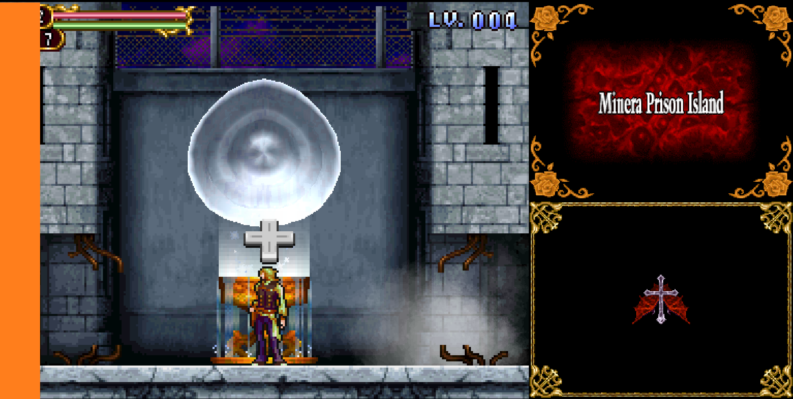
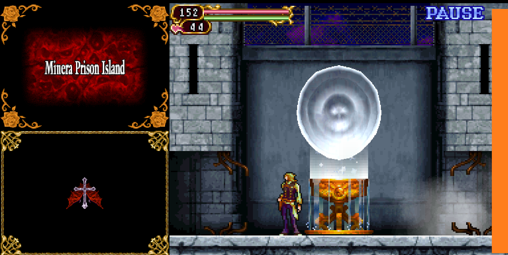

Despite being glitchless, this is currently the second fastest Main Category
Here is the current World Record by me:
Frozer held the initial record on DS, which you can find here
Dryace then lowered this record to 25:42, which you can watch here
The main quirk of this run is using the touchscreen to Teleport, which can be done with the Mouse/Right Stick Cursor on the Dominus Collection
If you're not comfortable with switching to your Mouse or using the Right Stick for movement in this run, then this category is not for you
The two things that shape this run are: effective MP Management to keep up Teleports and fast boss strategies
Despite being very strong, Albus is very fragile and will often die in a few hits, especially in late game
With that being said, this guide will go over effective methods for movement and bosses
Important, make sure your mouse cannot go past the left or right edge of the game screen, depending on where your subscreens are
I personally made windows to detect my monitors as on top of each other as opposed to side by side for this run
If subscreens on the right, make sure it can't go past the left edge of the orange rectangle in the image below:

If subscreens on the left, make sure it can't go past the right edge of the orange rectangle in the image below:

If you're using the Dominus Collection's cursor, it's already programmed to stay within the main game screen so the prior adjustments do not apply
The videos I include will be an easy way to see where to position your cursor throughout the run
Lastly, we will be using Jump or Crouch backdash cancels in between our teleports, so go over those
I recommend setting up your mouse on the lower center of the right edge before starting a run so you can easily start teleporting
Skip the intro cutscene and the tutorial text then teleport twice to the right before backdashing to the Village's exit
Enter the Monastery and teleport to the right edge of the room then in the next room, teleport into the door
In the Skeleton Room, backdash until your MP bar is almost full, then teleport twice to the right repeat this for a total of 4 teleports in this room
Backdash through the next room, then slide into the next room before doing2 more teleports to the right to get the warp
An important quirk for Albus is that he cannot teleport while in the backdash animation, so either cancel it or teleport when airborne
You'll notice I like to slide of edges then start teleporting or crouch/jump to get out of the backdash animation
Also make sure your cursor is high enough so that you're teleporting over the enemies
Move your cursor the opposite side of the screen then slide out of the warp room and teleport twice left
Highjump up and left through the vertical room and continue left. You can jump out of a high jump for extra height
In this Skeleton room, do 2 teleports left before landing and backdashing through the last Skeleton then do 1 more teleport to exit left
Ideally, when backdashing through enemies, space it so that Moonwalkers lets you i-frame through them
High-jump + jump up the next vertical room and take the first exit on the right then move your cursor back to the right
In the Zombie room, backdash until MP refill, teleport twice right and repeat till exit
In the following room with the Horse Heads, do the same backdash into 2 teleport movement
Teleport once in the Skeleton Knight room and backdash to the exit
Finally, move your cursor up to teleport to the ledge with the bats before high jumping + jumping up to the left exit
After sliding into the long corridor, we're going to do a total of 3 pairs of teleports to the left separated by backdashes
You can also damage boost off enemies in this room to move faster when out of MP
Exit this room with backdashes to ensure a full MP bar so that you quickly get through the room before the boss
In the aforementioned room, teleport to the Red Chest open it, and as it's opening, teleport up to the boss door
Enter the room and as soon as the intro animation is done, jump towards the boss while firing normal shots
Upon landing immediately infront of Anthroverta, use Optical Shot then fire a couple more regular shots
Once your MP bar is about 25-35% full do a backdash into the boss and then Flame Kick to the right
I like to cancel my regular shots with a backdash to ensure it doesn't eat my Flame Kick input
Also, if you're close enough to Anthroverta, you don't have to backdash into him
You can just trigger the Flame Kick while standing next to it. I just find backdashing into it more consistent
I like to start going for the Flame Kick when my MP Bar depleted past the top left Magnes Pin in the room
As it's dying, move your cusror to the left then teleport into the boss door to exit and do one more teleport to exit left into the warp room
You can kind of spam these teleports out of the boss room to basically instantly leave
Warp to the bottom, when you gain control, teleport into the left exit then 2 more teleports left in the next room to its left exit
In the Vertical Room, do a single teleport to the left into the next room with the Skeletons
Backdash a bit until your MP Regens then do 3 teleports over the Skeletons. Leave with some more backdashes and a single teleport into the left exit
Backdash through the first outdoor room and then teleport to the left exit of the next
Select Ruvas Forest and proceed to the next section of the run
As you can see, I'm really precise with the number of teleports here as spamming it or using it mindlessly is slow, so try to follow what I say as closely as possible
You also want to make sure to not teleport too quickly near exits as Albus will get stuck right before the room transition instead of leaving the room
MP Management is important, but it does get a bit easier as we level up more and grab more MP Max Ups
This entire section should ideally be done in under 1:30, closer to a low 1:2x, so try to practice until that
This section is really straight forward but there are a few nuances that I want to point out
Also, since its so short, I just put it in 1 video after the three sections here
Basically, we're going to continue to teleport -> backdash until mp refill -> teleport -> repeat to the right
In the entrance, teleport once to the right to enter the first room of the forest
In that room, Backdash to let your bar refill then 3 teleports right positioning high enough to avoid the enemies like before
Do the same refill strategy and on this next set of triple teleports position your second teleport a bit higher to avoid getting hit by the Polkir
Basically, after the Macir Statue the teleport sequence is Center -> Up Center -> Center
After some more backdashes, do 2 more teleports past the Bone Scimtars and dash to the right exit
Do another set of 3 teleports to the right, over the Zombies and avoiding the Polkir by teleporting to the right of it
Try to i-frame dash with Moonwalkers through the Skeletons after the previous teleports, but it's not a big deal if you get hit by them as you go through
Once you get past the Skeletons, triple teleport over the Axe Armors, which should put you above the Zombies to damage boost off of into backdashes
Then do 3 teleports right to leave the second room
Once again, backdash until you regen MP and triple teleport over the enemies here
Try to position your teleports to where you won't get hit by any flying enemies
Repeat the same movement we've been doing to clear the room, combining teleports, backdashes, and damage boosts
Once you reach the room with the exit arrow single teleport right into the exit
I like to boost off the Necromancers or dash through them depending on where my teleports land me
The main issue most runners face with this section is not getting hit by enemies as they teleport, which is why it's crucial to move your cursor to just below the halfway point
Moreover, I highly recommend closely paying attention to how top runners position their teleports/cursor to ensure you don't lose any time here
On average, this section should be 30 seconds long, so manage your MP well here to hit that time
I like to teleport right in the first room then once again to the middle of the second, just past the Squid
In the following room, you wanna do triple teleports right after waiting for your MP to regen
Same in the next room, then a fourth teleport as soon as your MP permits into the next room
Make sure you never enter the water and backdash cancel off boxes in-between teleports
In the inner rooms, backdash cancel through the first room, then teleport past the save
You can take the save, but I recommend skipping it and just conserving MP until the MP Max Up
Teleport through the next corridor, then fall into the water, before teleporting twice right to get to the Red Chest
Try to ascend and teleport right before the MP Refill, then backdash to the next room before doing 3 more teleports right and dash into the last room
Finally, do 2 teleports right, in the transition room teleport to the exit
Teleport right to the boss door, you should have enough MP for at least 2 teleports to get there then slide in
Ideally, we want Giant Skeleton to do his kick so that we can Flame Kick across him
From my testing, you do not want to position Albus too close to Skeleton when initiating the kick
The input string is as follows for this fight: Short Hop Right -> Acerbatus -> Land -> Short Hop Right -> Optical Shot -> Land -> Flame Kick Right
This should insta-kill him, if doesn't die after you land from the Flame Kick, just do an extra Optical Shot
If he instead goes for a grab, backdash into him then do another Flame Kick
As the boss dies teleport into the boss door, then do 3 teleports right over the enemies in the next room, dash to the exit
Do 4 teleports in the following room over the enemies then once more when your MP permits over the last Spearguard, dash to the next room
Teleport up the stairs then dash into the first hallway section
In the hallway room, you want to teleport 4 times on the top row over the enemies, aim for the top-right center edge of the screen then one more teleport to the next room
Teleport once down the stairs to the right then fall down to the next room and teleport through the transition room
Teleport down right again, then move left a bit before teleporting down left into the next room
Do 3 teleports left over the Spearguard and Invisible Man
Note: There's an HP Max Up here that is optional. I recommend it if you're new to the route
In the Guillotine Room teleport down-right just infront of the first trap and walk past it
Double Jump over the Skeleton Archers before doing another down-right teleport past the second trap and dashing right
Teleport up over The Creature then down-right to the exit
In the following room, backdash to the first trap before doing 2 teleports over the Swinging Trap and one last teleport to the ceiling exit
In the next room, jump over the Invisible Man and do 2 teleports left over The Creature
High-jump up the Skeleton Archer room then teleport above the stairs to go to the next room
Teleport right through the transition room, then in the next room, teleport over the stairs into a high-jump to the next exit
In the hallway room, do the same top-right teleports as before over the enemesthen to the exit
Teleport down the stairs , then across the Spotlight room with backdashes in-between to keep up movement
Leave Prison with one last teleport
Backdash to the spikes then do 3 teleports over them and one to the boss door
Slide in, then teleport to the upper right and high jump on to the right platform
After its intro animation fall to the center platform and do 1 optical shot as it rasies its right leg
Jump to the next center platform and repeat the previous sequence
Go to the bottom right platform at the top and do another Optical Shot then fire an Acerbatus then one last Optical Shot
It will transition to Red Phase, go to the left of the arena to make it break the top left of the ceiling
Optionally, you can hit it during Red Phase with a mix of Acerbatus and Optical Shots to build your Attribute Points
After it's second slam at the ceiling, teleport to the right of the arena to avoid getting hit then back to the lower left platform
Once the ceiling breaks, do Acerbatus -> Optical Shot -> Acerbatus -> Optical Shot -> Flame Kick (as the claw goes above you)
You can fire off some Opticals as you ascend but Crab's HP should be low enough now to instantly transition to Red Phase next
From here, after the next ceiling break repeat the same Acerbatus -> Optical sequence as before, optionally attacking as you rise
After the final ceiling break, high-jump 5 times up then teleport into the elevator and press down to end the fight
Slide out of the boss arena and fall down the next room before teleporting left out of it then another teleport out of Lighthouse